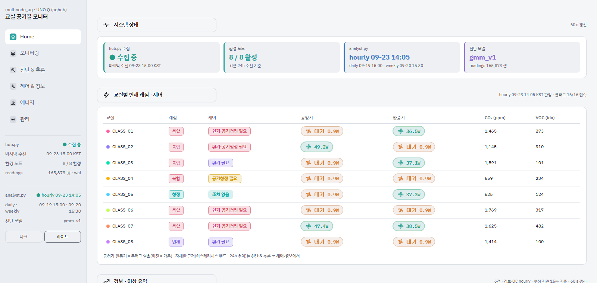

대시보드 화면 구성과 배치 원칙
Home 화면

1
2
3
4
5
1
믿어도 되는 데이터인가
수집·노드·분석 상태를 늘 보이게
2
메뉴 = 질문 순서
지금? → 변화? → 왜? → 무엇을? → 비용?
3
위에서 아래로 중요도순
상태 → 교실별 판정 → 경보
4
판정과 실물을 나란히
분석 결과 옆에 플러그 실측, 다를 때만 빨강
5
색과 움직임은 정보만
레짐 4색 고정, 가동은 회전으로 표시